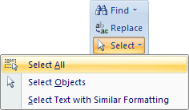
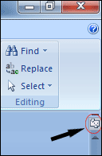

Free
computer Tutorials
|
Free
computer Tutorials
|
|
 home home |
|
|||||
Microsoft Word 2007 to 2010
Highlighting Text in Microsoft WordIt's a lot easier to show you what highlighting is, rather than explaining
it. So examine the image below, which is what your letter should look
like so far: The two lines with the blue background have been highlighted. When you highlight some text you can do things with it. You can change the size of the font, underline it, make it bold, delete it altogether, and many other things. But only the text that you have highlighted will change. The rest of your document will remain unchanged. So if we were to change the size of the font in the document above, only the two lines that have been highlighted will change size. Highlighting is very important in word processing. So how do you highlight some text? There are quite a few different ways to highlight text. We'll go through a few now. Practice them as you go along.
How to highlight an entire documentYou can highlight your entire document from the Home tab at the top of Word. On the right hand side, you should see an Editing section:
Click on the Select item to see a menu appear:  In Word 2010 you'll see an extra item on the menu, right at the bottom: Click Select All from the menu to highlight an entire document. To get rid of highlighted text, click anywhere in your document with your left mouse button. An easier way to highlight all the text in your document is via a keyboard shortcut. Hold down the CTRL key on your keyboard. Keep it held down and press the letter A. This is will select all text. (This shortcut works in other software, not just Microsoft Word.)
How to highlight an entire lineMost of the time, though, you won't want to highlight the entire document, but just sections of it. You can highlight an entire line with just one mouse click. To highlight a single line, move your mouse over to the left margin
of your document. As in the image below: If you can't see a ruler at the top of the page and the left of the page, click the tiny icon in the top right of Microsoft Word:  Another way to display rulers is from the View tab in the Ribbon at the top of Word. Locate the Show/Hide panel, and the click the Ruler item. When you move your mouse pointer to the margins, it will turn into an arrow. When it does, click your left hand mouse button once, then let go. A single line will be highlighted. You can use the same technique to highlight more than one line at a time. Instead of letting go of the left mouse button, keep it held down. Then move your mouse upwards or downwards in a straight line. Let go of the mouse button when you are satisfied.
Highlighting blocks of textThis one is a little trickier, but not too tricky. To highlight a block of text, do the following:
Highlight by draggingThis is another tricky one, when you're starting out. A bit of practice, though, and you'll soon master it. To highlight some text by dragging, do the following:
Highlighting a single wordHighlighting a single word is easy. All you have to do is to double click on the word with your left mouse button. That's it!
|
||||||
|